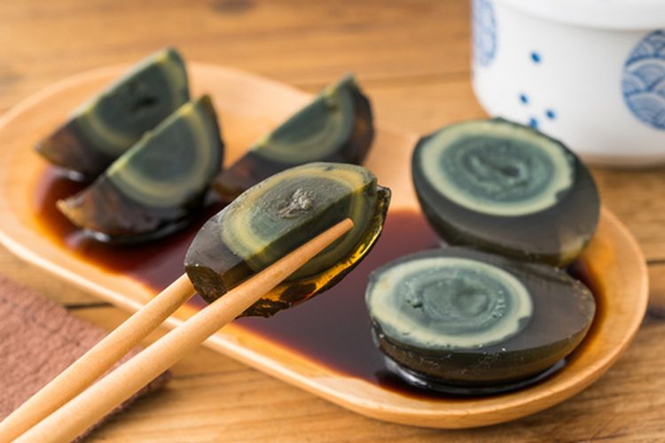

Century Egg

First of all, century egg or thousand-year old eggs 皮蛋 as they are sometimes called are not one hundred years old. They are simply eggs that have been treated in a basic solution that dramatically transforms them into a striking accompaniment to jok or savory rice gruel.
My first attempt at homemade century eggs was an epic failure, so victory this round was especially sweet
Ingredients Needed
- glass container
- large ceramic or Pyrex mixing bowl
- rubber gloves
- safety glasses
- kitchen scale
- 24 quail eggs
- 330 g. water
- 1 g. pu-erh tea
- 16 g. Kosher salt
- 14 g. food-grade sodium hydroxide lye
- 0.7 g. food-grade zinc oxide
Step By Step
- In a small saucepan, bring half of the water to a boil.
- Turn off the heat and add pu-erh tea. Allow to steep for 20 minutes.
- Transfer the tea to a medium-sized ceramic or glass bowl. Wear gloves and safety glasses. Add the salt, lye, and zinc, then stir to dissolve. Add the remaining water. Cover and let sit overnight.
- The next day, wearing gloves, gently add the eggs to the brine. Cover the jar and soak the eggs for 12 days.
- Remove the eggs from the brine and briefly rinse off the shells with water. Allow the eggs to dry for 1 hour.
- Place the eggs into a zippered bag. Place the sealed eggs into a light-proof container. Store in a cool, dry, dark place for 5 weeks.
- Bring a pot of water to a boil. Fill a bowl with ice cubes and water.
- Place a few eggs at a time into rapidly boiling water and boil for 1 minute. Do not place too many eggs in at once.
- Remove the eggs from the boiling water and cool in the ice bath.
- Peel and serve in a bowl of jok (rice porridge)